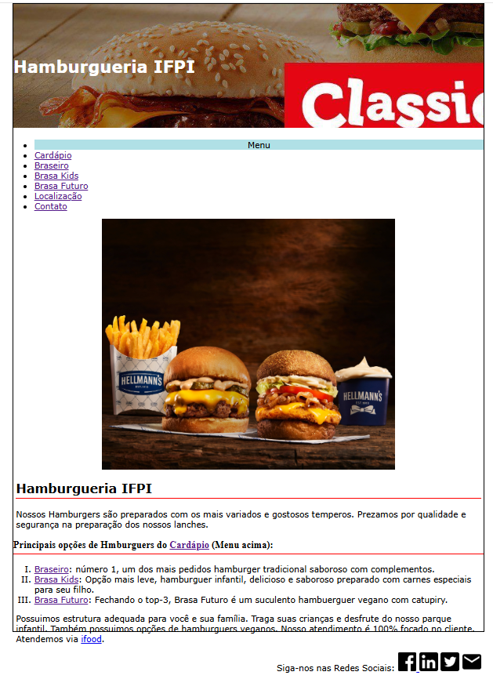
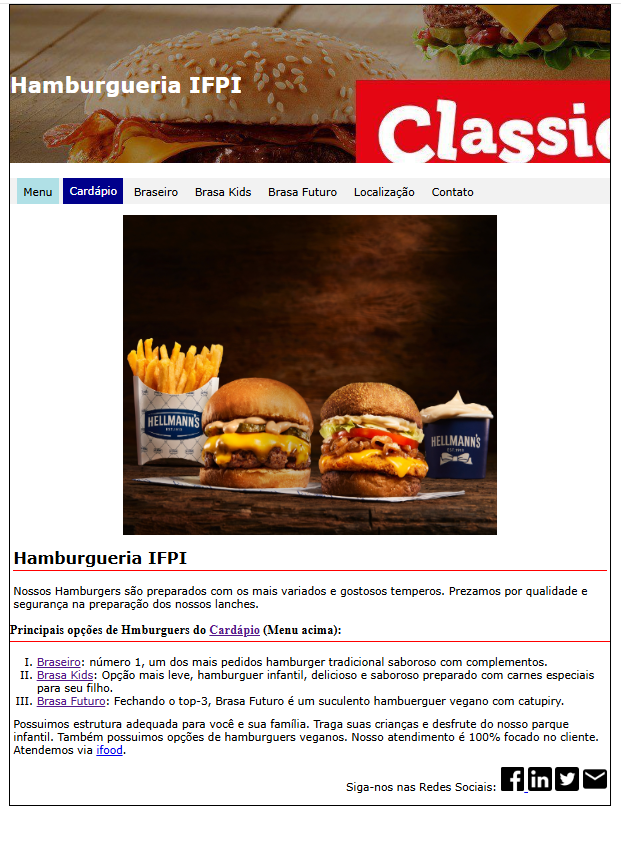
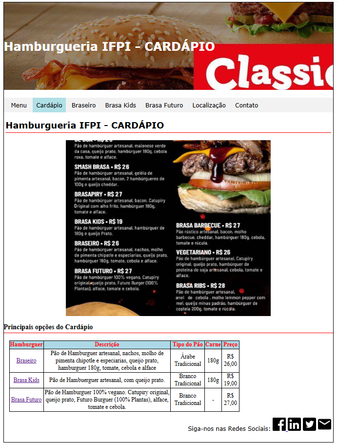
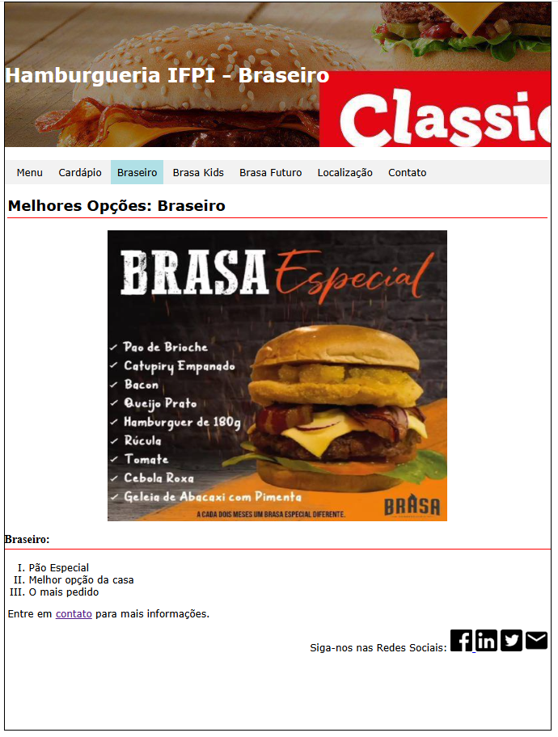
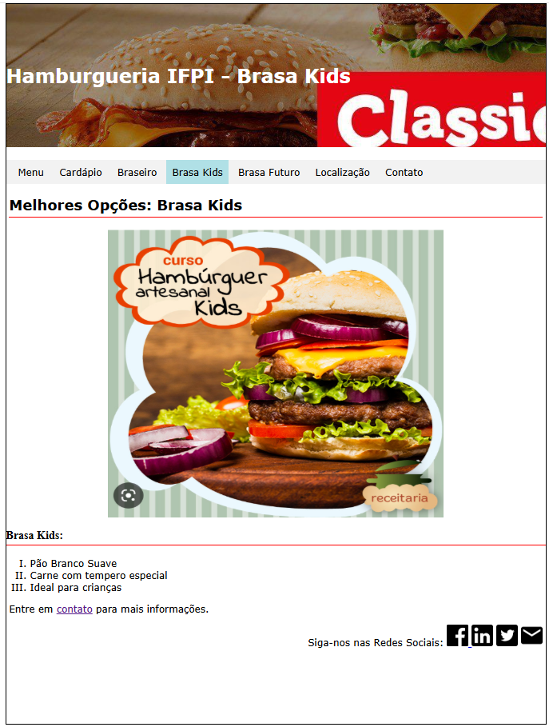
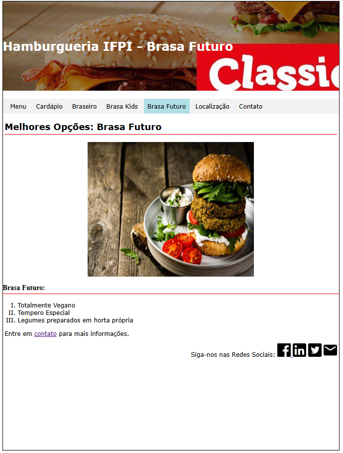
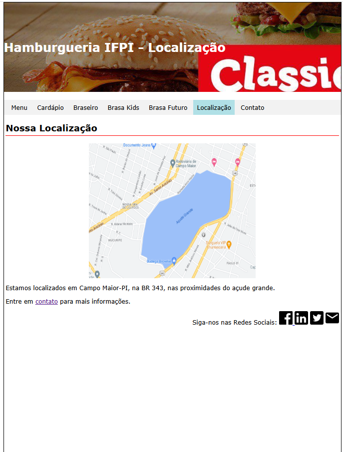
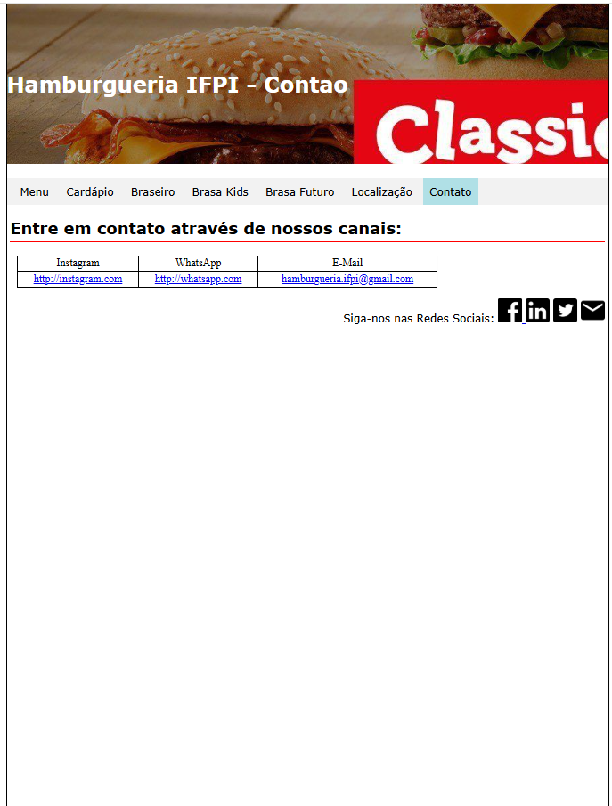

2º Ano Informática - IFPI Campus Campo Maior
Professor: Nairon S. Viana
Valor: 2,0 pontos
Atividade: fazer os ajustes necessários em CSS/HTML para transformar a lista existente em um menu horizontal de acordo com as características apresentadas e utilizando o código passado pelo professor nos slides em sala de aula.
Link para os slides: aqui
Copie os arquivos abaixo para sua máquina e complete a atividade utilizando o VS Code.
```htmlindex.html
```
body{
border: 1px solid black;
margin: 0 auto 0 auto;
width: 900px;
height: 1200px;
}
h1{
background-image: url('https://wimpy.co.za/site/images/pages/menu/2023/headers/classic-burgers/classic-burgers-generic-header.jpg');
color: white;
padding-top: 100px;
padding-bottom: 100px;
}
ul{
}
#menu{
text-align:center;
background-color: powderblue;
}
p, h2{
margin-left: 5px;
margin-right: 5px;
}
h1, h2, p, ul, ul li, ol li{
font-family: 'Verdana';
}
p{
font-size: 100%;
}
h2, h3{
border-bottom: 1px solid red;
padding-bottom: 5px;
}
table{
border: 1px solid black;
margin-left: 15px;
width:70%;
}
th, td{
border: 1px solid black;
text-align:center;
}
th{
background-color: lightblue;
color: red;
}
th, td, tr, table{
border-collapse: collapse;
}
.promocao{
background-color: red;
color: white;
}
Observe a diferença entre o estado atual da página e o resultado esperado.

Página sem estilização do menu.

Menu horizontal totalmente estilizado.
As páginas abaixo deverão ser desenvolvidas utilizando a mesma identidade visual da página principal. Observe as imagens de referência fornecidas pelo professor.

Página principal do cardápio da hamburgueria.

Detalhes do hambúrguer Braseiro.

Opções infantis da hamburgueria.

Hambúrguer vegano e opções especiais.

Mapa, endereço e formas de acesso.

Informações para contato e redes sociais.